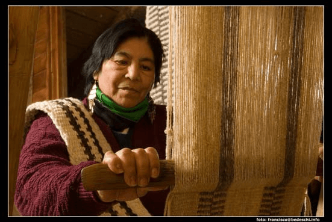
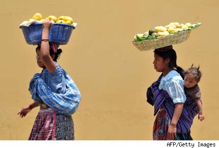
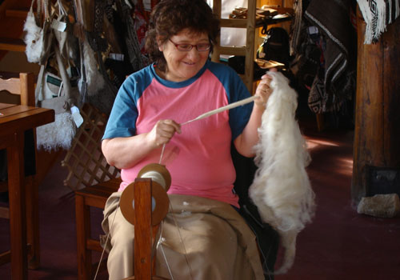
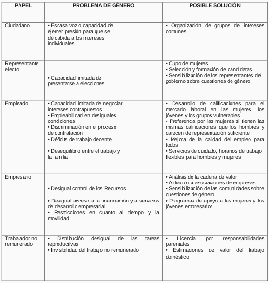
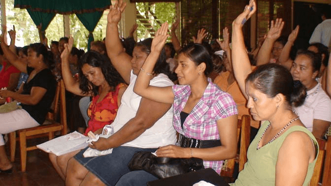
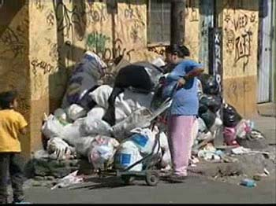
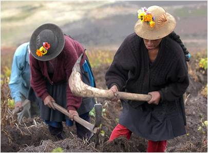
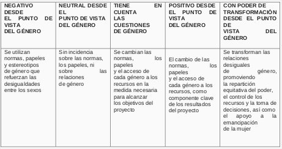

La dimensión de género en el desarrollo económico local
Cada vez existe un mayor consenso acerca de la importancia de las mujeres como actoras fundamentales de la economía. En todo el mundo, la creciente participación de las mujeres en el empleo aporta mucho a las tasas de crecimiento y la viabilidad económica en el plano nacional. Aun así, en muchos países, en el mundo del trabajo sigue habiendo desigualdades de género que socavan la productividad y la competitividad. Si bien la igualdad de género suele considerarse una meta legítima, es posible que algunos aún crean que acarrea costos para el crecimiento económico.
La igualdad entre mujeres y hombres contribuye de diversas formas al crecimiento económico y la plena participación de la mujer en el escenario económico es fundamental para construir economías sanas y sostenibles.
En el mundo del trabajo, la discriminación por motivos de género se debe al rol de los géneros y las normas sociales imperantes, que por lo general demoran en cambiar. Pese a los avances significativos que se han constatado durante los últimos cincuenta años en la promoción de la igualdad de género en el empleo, sigue habiendo un elevado porcentaje de mujeres en ocupaciones sujetas a un estereotipo de género y generalmente más precarias, vulnerables y peor remuneradas que las de los hombres. En la mayoría de los países sigue existiendo el problema de que el sexo de las personas determina diferencias de remuneración frente un trabajo de igual valor. En consecuencia, las mujeres sufren desproporcionadamente más que los hombres los déficits de trabajo decente y, por ende, la pobreza. Esto no solo va en detrimento de las mujeres y su familia, sino que también representa una enorme carga para la economía. Aumentar el número de puestos de trabajo y su calidad tanto para los hombres como para las mujeres puede incentivar la productividad local e incrementar la demanda de bienes y servicios en la economía local por el aumento del consumo.
La desigualdad de género no se manifiesta únicamente en los niveles inferiores del mercado de trabajo, también se constata en los puestos superiores. A pesar de que su nivel de instrucción va en aumento, las mujeres representan apenas el 10 por ciento de los miembros de la dirección de las empresas más grandes que cotizan en la bolsa de valores de los Estados Miembros de la Unión Europea. Esa cifra se reduce al 3 por ciento en el caso de las mujeres que ocupan puestos en el nivel más alto de toma de decisiones dentro de las mismas empresasComisión Europea, “Women and men in decision-making 2007. Analysis of the situation and trends.”. Hay muchos datos que demuestran que si se aprovecha debidamente el talento de los hombres y de las mujeres, se diversifica más el número de unos y otras en las ocupaciones y se equilibran mejor las estructuras empresarias de adopción de decisiones, es posible aumentar la ventaja competitiva y la productividad de esas empresas.
No se puede negar la importancia de las microempresas y las pequeñas y medianas empresas en las economías locales. Si bien esa importancia depende del país de que se trate, se ha reconocido que las microempresas y las pequeñas y medianas empresas son un motor clave del crecimiento y una fuente de empleo para un porcentaje significativo de la fuerza de trabajo.
En países como Chile, Grecia y Tailandia, su contribución en materia de empleo es superior al 80 por ciento, y se ha demostrado que en los países con un nivel de PIB per cápita más elevado tienen una participación mayor en el empleo total y el PIBAyyagari, M., Beck, T., Demirguc-Kunt, A., “Small and Medium Enterprises across the Globe. Small Business Economics 29”, págs. 415 a 434, 2007.. En Europa representan más del 80 por ciento de los puestos de trabajo en ciertos sectores, como el textil, la construcción y el mobiliarioComunidades Europeas, “Rompe con los estereotipos de género y dale una oportunidad al talento. Conjunto de herramientas para asesores de PYME y gerentes de recursos humanos”, 2008..
Por diversos motivos, las microempresas y las pequeñas y medianas empresas deberían contar con una fuerza de trabajo con representación equitativa de ambos sexos. En primer lugar, el nivel de instrucción de las mujeres ha aumentado significativamente en los últimos decenios, y cada vez más mujeres se gradúan de carreras técnicas y científicas. Cuando se discrimina a la mujer en el proceso de contratación, las empresas desaprovechan esa reserva de mujeres calificadas cuyo talento se infrautiliza. En segundo lugar, las diferencias entre los empleados de sexo masculino y de sexo femenino pueden reportar importantes ganancias a las empresas. Dado que éstas funcionan en un mercado heterogéneo y a menudo imprevisible, una gama diversa de conocimientos especializados dentro de una misma empresa la dota de un mayor nivel de calificación y una mayor capacidad de reacción ante los cambios. El equilibrio de género en los equipos de gestión puede mejorar la capacidad de innovación e incrementar la rentabilidad de los ingresos y activos.

Aunque evidentemente no son exhaustivas, las razones citadas demuestran que existe un argumento económico en favor de la igualdad de género. Deberían crearse y aplicarse efectivamente marcos adecuados de política para la igualdad de género en los ámbitos nacional y local a fin de conseguir un nivel de acceso y oportunidades equitativas, que permitiera el avance profesional tanto a los hombres como a las mujeres en el mercado de trabajo.
Tanto los hombres como las mujeres contribuyen a la economía local desde sus roles específicos y tienen conocimientos y calificaciones singulares que se corresponden con dichos roles. Esos son los componentes básicos para desarrollar el potencial de una localidad. Hay determinadas cuestiones de género relacionadas con cada uno de esos papeles, y medidas que pueden servir para abordarlos.
En una democracia, los ciudadanos influyen en el programa de desarrollo a través del voto electoral y participando en los debates públicos sobre las decisiones del gobierno que han elegido. Ahora bien, la capacidad de defender efectivamente los derechos individuales y ejercer presión sobre el gobierno local para que atienda los intereses de las personas muchas veces supone la acción colectiva. En zonas donde el poder se concentra en unos pocos, la creación de grupos de intereses comunes formados por mujeres, agricultores, empresarios, residentes del barrio, etc. y su vinculación con grupos análogos de otros lugares ha servido para conseguir que los beneficios del desarrollo sean sostenibles y se distribuyan de manera más equitativa. Por lo tanto, la creación de pequeñas asociaciones en el marco del proceso de desarrollo económico local puede servir para hacer participar a las mujeres en los órganos locales de toma de decisiones. Se podrían dictar cursos de formación en género y liderazgo para aumentar las calificaciones en materia de oratoria, negociación, trabajo en redes, etc. Las campañas de sensibilización permiten crear conciencia sobre algunas prácticas de organizaciones e instituciones que pueden atentar contra la igualdad de género. En los países donde las mujeres tienen dificultades para organizarse, puede recurrirse a obras de teatro y programas de radio para modificar la percepción pública del colectivismo, y también para ofrecer contenidos de formación a quienes viven en zonas remotas.
Por lo general, es más fácil que las mujeres participen en las estructuras de gobierno locales que en las nacionales, dado que los criterios de admisibilidad son menos rigurosos y las mujeres conocen bien su comunidad y las oportunidades y los problemas que se presentan en ella.
Si los diferentes grupos sociales de una región tienen una representación proporcionada en el gobierno local, es posible que los planes y procesos de desarrollo respondan a los intereses de esos grupos y que la tensión social derivada del conflicto de intereses se resuelva mediante la negociación. Habida cuenta de las dificultades con que tropiezan las mujeres para presentarse a elecciones, en varios países se han iniciado acciones afirmativas que consisten en reservarles cuotas en los órganos representativos. Por ejemplo, Brasil, México, Tanzania y Uganda han establecido por ley un sistema de cuotas para las mujeres en los planos nacional y subnacional. La India tiene el mismo sistema a nivel subnacional, y en países como Chile, Colombia y Tailandia son los partidos políticos quienes adoptan voluntariamente dichas cuotasInternational IDEA, Inter-Parliamentary Union, Stockholm University, “Global Database of Gender Quotas”.
Ahora bien, cabe mencionar que una representación equilibrada de hombres y mujeres en los órganos electivos no garantiza por sí sola la promoción de la igualdad de género, dado que algunas mujeres pueden sentirse incapaces de plantar cara a las estructuras patriarcales, o no necesariamente representar los intereses de la mujer. Aumentar la capacidad de las autoridades locales, mujeres y hombres, respecto de la sensibilización sobre la problemática de género puede mejorar la representación de las mujeres.

La disponibilidad de oportunidades de trabajo decente y el hecho de que haya personas calificadas para aprovecharlas son un importante indicador de la prosperidad de la economía local.
Es preciso prestar especial atención a la orientación que pueden hacer los jóvenes de ambos sexos a las economías locales. El mayor acceso a la educación secundaria y terciaria, la rápida devaluación de los estudios y la demanda creciente y constante de trabajadores experimentados, entre otros factores, hacen que sea cada vez más difícil para los jóvenes encontrar un empleo acorde a sus calificaciones y expectativas. Según los datos, las tasas de desempleo juvenil han superado las de los adultos en las 125 economías sobre las que se dispone de información y, como mínimo, las han duplicado en varios países de Asia y Oriente Medio; por otro lado, las tasas de desempleo femenino son incluso más altas que las de desempleo masculinoOIT, “Indicadores Clave del Mercado de Trabajo”, 2007.. Orientar específicamente los servicios de empleo a los jóvenes puede ayudar a promover las oportunidades de empleo para ellos en la economía local, ya que la investigación ha demostrado que un joven cuya primera experiencia en el mercado laboral es de desempleo a largo plazo seguramente seguirá pasando de estar desempleado a estar empleado en un trabajo mal remunerado por el resto de su vida laboralOIT, “Tendencias mundiales del empleo juvenil”, Ginebra, 2006.
La igualdad de género es esencial para la promoción del trabajo decente. Las mujeres tienden a tropezar con más obstáculos para acceder a empleos decentes porque no tienen tantas oportunidades de adquirir calificaciones y conocimientos. Habría que alentar a los empleadores a que en el proceso de contratación den preferencia a la candidatura de las mujeres si éstas tienen las mismas calificaciones que sus pares masculinos y carecen de representación suficiente entre los trabajadores de la empresa.
En los países en desarrollo, gran parte de la población activa femenina se concentra en empleos mal remunerados, de baja productividad y baja categoría, o en puestos a tiempo parcial, que escapan a las obligaciones mínimas en materia de salario mínimo y seguridad social. La discriminación persiste en diversas formas: desigualdad de remuneración por un trabajo de igual valor, despidos por embarazo, falta de prestaciones por maternidad, falta de cobertura de seguridad social y dificultades para volver al trabajo después de las licencias por el nacimiento y la crianza de los hijos. Las mujeres discapacitadas o de grupos marginados muchas veces son víctimas de múltiples formas de discriminación. Por todo ello, debería propugnarse con firmeza la igualdad de género en el lugar de trabajo. Las medidas que permiten a los empleados equilibrar el trabajo con la vida familiar, como los servicios de cuidado profesional, los horarios de trabajo flexibles, la posibilidad de trabajar desde el domicilio y la licencia de paternidad, facilitan enormemente la participación de las mujeres en la fuerza de trabajo. Los empleados podrían contribuir más con la economía local si se convenciera a los empleadores de que mejorar las condiciones de trabajo es bueno para el negocio. Junto con otros factores, las buenas condiciones de trabajo resultan cruciales para aumentar la productividad de la mano de obra y potenciar la capacidad de innovación y la competitividad de las empresas locales.
Experiencias: La Unión de Mujeres de VietnamGobierno de Vietnam, “Plan de desarrollo de PYMES, 2006 - 2010”
Las mujeres dirigen el 30 por ciento de las PYME de Vietnam y son propietarias de alrededor del 60 por ciento de las empresas familiares. A ello se debe que uno de los principales objetivos de la Unión de Mujeres de Vietnam consista en ayudar a las mujeres a crear su empresa. Después de que el gobierno vietnamita promulgara un decreto sobre créditos para los pobres en 2002, la Unión de Mujeres de Vietnam colaboró con el Banco de Política Social para facilitar préstamos a mujeres pobres para que desarrollaran su empresa, contribuyendo de ese modo a erradicar el hambre y reducir la pobreza. Además, la Unión trabaja en coordinación con varios bancos comerciales públicos y organizaciones internacionales con el objeto de movilizar más capital para que las mujeres desarrollen su empresa; presta apoyo a la creación de empleo, la formación en transferencia de tecnología y la creación y el desarrollo de pequeñas empresas.
Las microempresas y pequeñas y medianas empresas confieren el necesario dinamismo a la economía local, ya que crean puestos de trabajo, además de bienes y servicios que impulsan la economía. Como es sabido, en la mayoría de los países en desarrollo las microempresas y las pequeñas y medianas empresas dan trabajo a un porcentaje significativo de la población activa, pero mayormente los puestos que crean son de mala calidad, están mal remunerados y ofrecen condiciones inseguras de trabajo y cobertura mínima de seguridad social. Cabe señalar que, en ese sentido, existen diferencias significativas entre las microempresas más precarias y las pequeñas empresas más dinámicas orientadas al crecimiento.
Cada vez más mujeres se dan cuenta de que crear su propia empresa o trabajar por cuenta propia desde el hogar les da más autonomía y confianza, les permite hacer un uso óptimo de sus calificaciones y mejora su condición social. Las mujeres, sobre todo, suelen verse obligadas a hacer algún tipo de actividad económica para complementar los ingresos del hogar. También es común que empiecen a trabajar en la empresa de su esposo o sus padres, sin un contrato adecuado y con poco control de los recursos y las horas de trabajo.
Sin embargo, pese a los obstáculos que impiden a las mujeres controlar los recursos, una proporción significativa de las empresas dirigidas por mujeres ha pasado de la producción en el hogar (mujeres que trabajan en su domicilio) y las pequeñas actividades comerciales de subsistencia a la actividad empresarial más competitiva de producción de bienes y servicios para los mercados local, regional, nacional e internacional. Para que sus empresas crezcan y la oferta de bienes y servicios se diversifique, las mujeres necesitan apoyo estratégico y acceso no solo a la financiación, sino también a servicios profesionales de desarrollo empresarial acordes a sus necesidades. Además, deberían resolverse los problemas de género en la comunidad y el hogar, tales como la división desigual de las responsabilidades del cuidado y las tareas del hogar. La participación en asociaciones de empleadores y en organizaciones empresariales representativas puede dar a las empresarias el apoyo necesario para acceder a los servicios de desarrollo empresarial, a oportunidades de financiación, al desarrollo de los recursos humanos y a las estructuras de toma de decisiones, y ayudarlas así a mejorar su competitividad.

Cada vez se reconoce más que la capacidad empresarial es un medio importante y una estrategia valiosa para crear puestos de trabajo y dar independencia económica a los jóvenes de ambos sexos. Son cada vez más los jóvenes de todo el mundo que están creando su empresa, revitalizando así la economía local y ofreciendo bienes y servicios valiosos a las comunidades locales. Los empresarios jóvenes pueden responder especialmente bien a las nuevas oportunidades y tendencias, así como contribuir a la innovación del mercado. El apoyo a la capacidad empresarial de los jóvenes a nivel local se presenta como una estrategia fundamental para promover el crecimiento económico, mejorar el índice de éxito de las microempresas y las pequeñas y medianas empresas e impedir que las empresas dirigidas por los jóvenes queden relegadas a la economía informal. El uso de programas de radio y otros medios de comunicación masivos mejoran la información del mercado y refuerzan la capacidad empresarial. Esos medios pueden usarse para ayudar a los jóvenes empleando un formato que les sea atractivo y que permita llegar a quienes viven en zonas remotas.
Por lo general, la aportación que hacen los hombres y las mujeres a la economía local en forma de trabajo no remunerado no está contemplada en las estadísticas nacionales ni locales del crecimiento económico. En el caso de las amas de casa, la actividad productiva se desarrolla en el hogar y no está destinada al mercado, sino al consumo familiar. Además, durante todo su ciclo de vida, las mujeres dedican un tiempo considerable, por lo general más que los hombres, a las tareas reproductivas —mantenimiento del hogar, procreación, crianza, cuidado de jóvenes, enfermos y ancianos— y a su papel en la sociedad —educación y voluntariado—. Poco a poco, estas tareas se están distribuyendo más equitativamente entre hombres y mujeres, aunque muchas sociedades siguen considerándolas obligaciones propias de mujeres y niñas.
Los hombres que trabajan también necesitan flexibilidad y una licencia para asumir plenamente sus responsabilidades paternales. Al evaluar la aportación tanto de los hombres como de las mujeres a la economía local, hay que dar el reconocimiento, la visibilidad y el valor debidos a ese trabajo no remunerado, que se realiza paralelamente al empleo.
A medida que se suman más mujeres a la fuerza de trabajo, crece con más rapidez el sector de servicios de atención remunerados, que a su vez emplea a un alto porcentaje de mujeres. No obstante, las presiones competitivas están generando una baja remuneración y condiciones de trabajo deficientes, que tienen repercusiones negativas en los empleados del sector.
Las empresas de la economía social —es decir, aquellas que tienen la característica particular de producir bienes, servicios y conocimiento apuntando a metas económicas y sociales y promoviendo la solidaridad al mismo tiempo— pueden hacer una contribución importante para concretar objetivos comunitarios como la prestación de seguridad social y servicios de atención. El fortalecimiento de las empresas de interés social y la prestación de sus servicios a la comunidad pueden ser elementos importantes de las estrategias de desarrollo económico local y ayudar a promover la igualdad de género.
Cuadro 1. Los diversos papeles que desempeñan los hombres y las mujeres en el desarrollo económico local

Ciudadano
Problema de Género
Posible Solución
Representante electo
Problema de Género
Posible Solución
Empleado
Problema de Género
Posible Solución
Empresario
Problema de Género
Posible Solución
Trabajador no remunerado
Problema de Género
Posible Solución
La buena gestión pública en el plano local supone la existencia de canales eficaces de comunicación para que los distintos grupos de interés puedan pedir al gobierno local o la autoridad encargada del desarrollo que atienda sus necesidades y prioridades. Una condición necesaria para esa representación y voz es la organización, en virtud de la cual las personas se unen y detectan problemas y soluciones comunes que les permitan presentar solicitudes a sus representantes para que estos las remitan a las autoridades locales. Cuando las relaciones de género son desiguales, es fundamental profundizar la labor a fin de crear las mismas oportunidades de participación para hombres y mujeres. En ciertas circunstancias, tal vez convenga organizar grupos de hombres y mujeres por separado para dar lugar a la libre expresión y a la negociación de prioridades dentro del grupo. Para empezar, esas prioridades suelen relacionarse con las necesidades prácticas o inmediatas, como el agua, la vivienda y el alimento. A medida que aumenta la confianza de las mujeres en sí mismas, los grupos de mujeres tienden a concentrarse cada vez más en problemas fundamentales o intereses estratégicos respecto de su condición y su capacidad de controlar los recursos.

Así, las mujeres dejan de ser receptoras pasivas de los programas de desarrollo y se convierten en asociadas en la configuración de las relaciones sociales y la economía local. Una de las diferencias entre el planteamiento anterior de la mujer en el desarrolloComo vimos, la Mujer En el Desarrollo MED es un enfoque utilizado en la planificación, ejecución y evaluación de programas centrados exclusivamente en la mujer que no cuestiona la relación de desigualdad de género y, por lo tanto, no aborda las causas, sino solamente los síntomas. y el de género y desarrolloEl enfoque de género y desarrollo reconoce que las estructuras sociales existentes tienen un efecto negativo en los grupos desfavorecidos. Así, apunta a generar un desarrollo equitativo y sostenible en el que tomen las decisiones tanto los hombres como las mujeres, facultando a esos grupos para garantizar que se beneficien del proceso de desarrollo por igual es la habilitación de las mujeres, los hombres pobres y otros grupos desfavorecidos para que puedan ser asociados en el proceso de desarrollo y tomar decisiones al respecto.
La descentralización puede dar lugar a la participación democrática de hombres y mujeres a través de procesos oficiales y oficiosos. Las instituciones tales como las asambleas municipales y los comités populares permiten conocer deliberadamente la perspectiva y los conocimientos locales e integrarlos en los planes de desarrollo. El desarrollo participativo se funda en el diálogo entre los representantes de los distintos grupos de interés, de modo que el programa de desarrollo se cree en conjunto y no venga impuesto por una elite local poderosa ni desde el exterior. Como corolario de esa participación, aumentan la transparencia y la rendición de cuentas de los gobiernos locales.
La desigualdad de género interpone diversos obstáculos que impiden la participación plena de las mujeres en las estrategias de desarrollo económico local. Esos obstáculos resultan aún más difíciles de sortear para quienes son víctimas de múltiples formas de discriminación, es decir, cuando la discriminación por razón de género se ve exacerbada por la discriminación por motivos de origen étnico, religión, posición profesional, condición de migrante, discapacidad, etc.
Entre los obstáculos más comunes a la participación cabe citar los siguientes:
Esos obstáculos no están aislados, sino que suelen guardar una relación de causa y efecto que los vuelve más difíciles de superar. Es preciso hacer un análisis de género en las primeras etapas de cada intervención para definir los papeles de los géneros vigentes, y los problemas y obstáculos que plantean respecto de la participación igualitaria de hombres y mujeres. En consonancia, habría que incorporar las cuestiones de género en cada fase de la intervención, es decir, las intervenciones deberían tener en cuenta las distintas necesidades y carencias de los hombres y las mujeres, y perseguir la solución de las desigualdades de género.
Como estamos viendo existen muchas razones para afirmar que las mujeres no son iguales a los hombres en condiciones de pobreza, y que modificar esta situación requiere prestar especial atención a esta desigualdad.
La primera diferencia es que hay más mujeres pobres que hombres pobres. El concepto de “feminización” alude a esta desproporción y a su aumento constante. Hay otros elementos a tener en cuenta: la pobreza afecta de manera diferente a las mujeres que a los hombres, y en el caso de las mujeres es poco visible porque queda comprendida dentro de los hogares.
La pobreza de las mujeres se manifiesta en la falta o en el acceso limitado a los recursos económicos, los servicios básicos, la salud y la vivienda. Y se concreta en el hambre y la mal nutrición, la mortalidad causada por enfermedades curables, la inseguridad y la discriminación o exclusión sociales, y la falta de participación en la toma de decisiones en la vida social, cultural y política.

A partir de los años 50 y 60, las mujeres que optaron por salir de los hogares para obtener un trabajo asalariado, lo hicieron en condiciones de desigualdad. A la larga esta incursión en el mercado laboral reforzó el lugar de pobreza de las mujeres, que sin abandonar la tarea doméstica, desarrollaron trabajos pagos paralelos, y al mismo tiempo se hicieron cargo de los hijos, las personas mayores y los enfermos. Sólo en algunos casos los Estados de los países latinoamericanos instrumentaron medidas para facilitar el cumplimiento de la doble jornada y extendió la educación inicial de los niños en zonas pobres.
La feminización de la pobreza y la igualdad entre hombres y mujeres fueron analizadas especialmente en la ”IV Conferencia Mundial sobre la Mujer” de 1995 en Beijing, como un tema de derechos humanos y como un requisito indispensable para alcanzar el desarrollo y la paz.Irma Arriagada, “Dimensiones de la pobreza y políticas de género.”
Por desarrollo económico local se entiende un proceso participativo de desarrollo en el plano local que tiene lugar en un determinado territorio o división administrativa local en asociación con interesados de los sectores público y privado. El planteamiento del desarrollo económico local se vale de los recursos y las ventajas competitivas del lugar para generar empleo decente y un crecimiento económico sostenible.
Si bien se trata fundamentalmente de una estrategia económica, con este enfoque también se aspira a conseguir los objetivos sociales de reducción de la pobreza e inclusión social. Su estructura de diseño y aplicación propicia el diálogo entre los distintos grupos de la comunidad y les permiten participar activamente en el proceso de toma de decisiones. Intervienen grupos de diversos niveles, por ejemplo, las autoridades del gobierno local, las organizaciones de empleadores, los sindicatos, la comunidad empresarial local y otros interlocutores sociales, como las asociaciones de pueblos indígenas o las organizaciones de la sociedad civil que representan a las mujeres y los jóvenes.
Los puntos de partida y el equilibrio específico de los ámbitos de intervención incluidos en el planteamiento del desarrollo económico local dependen del contexto específico y las necesidades prioritarias determinadas por la comunidad. No obstante, las estrategias de desarrollo económico local suelen consistir en intervenciones integradas que tienen por objeto:
Aunque flexible y adaptado al contexto, el proceso de desarrollo económico local suele dividirse en las seis etapas siguientes:
En la siguiente sección se presentan recomendaciones y se aconsejan medidas para incorporar la perspectiva de género en cada una de estas etapas.
Desde el inicio mismo del proceso de desarrollo económico local, cuando se está generando consenso sobre la estrategia y se están planificando las primeras actividades, debe ponerse especial cuidado en que los hombres y las mujeres tengan las mismas oportunidades de participar directamente en el grupo principal de interesados locales que dirigirán el proceso, y que puedan expresar sus necesidades y opiniones respecto del desarrollo de su localidad.
¿Quiénes son los interesados directos en las estrategias de desarrollo económico local?
Los interesados locales específicos que participan en la estrategia de desarrollo económico local dependen del contexto y de los objetivos concretos que se pretende alcanzar. Aunque no es exhaustiva, la siguiente lista incluye ejemplos de los interesados directos que suelen participar en las estrategias de desarrollo económico local :
Como las mujeres suelen tropezar con múltiples obstáculos al querer participar, las personas encargadas de ejecutar los programas de desarrollo económico local deberían entrevistarse con aquellas que mayor facilidad de palabra tienen, a fin de determinar cuáles son esos obstáculos y tomar medidas para sortearlos. Esas medidas incluyen la selección de un lugar socialmente aceptable y un momento oportuno para llevar a cabo entrevistas y reuniones grupales. De ser necesario, habría que alentar las reuniones de mujeres solamente, moderadas también por una mujer.
En esta etapa inicial, deberían aprovecharse las opiniones de las mujeres para determinar las relaciones de causa y efecto entre los distintos obstáculos detectados. Ese análisis servirá posteriormente para formular una estrategia con la cual abordar las causas de la desigualdad de género.
Las entrevistas iniciales con las mujeres de mayor facilidad de palabra también sirven para configurar los grupos sociales de la zona, con miras a que las reuniones y las discusiones de grupos representativos se celebren entre grupos homogéneos de mujeres. Tras unas cuantas reuniones de ese tipo, emergerán las personas que mejor representan a esos grupos. Cada grupo debería dar prioridad a los problemas que se pueden resolver en términos realistas con el enfoque del desarrollo económico local.
Paralelamente a la organización de las partes interesadas, habría que sensibilizar a los hombres y las mujeres sobre la contribución que pueden hacer las mujeres y los jóvenes al proceso de desarrollo económico local, y sobre las actitudes discriminatorias que les impiden participar e influir en ese proceso. Los juegos de roles son útiles para aprender a ponerse en el lugar de los demás. Además, para crear conciencia entre las autoridades locales, en los talleres de aumento de la capacidad destinados al personal y a los representantes electos se debería contemplar la sensibilización sobre las cuestiones de género y la enseñanza de herramientas prácticas de análisis de género y planificación presupuestaria atenta a la dimensión de género. Convendría invitar a las representantes de los grupos de mujeres para que transmitieran las preocupaciones y recomendaciones de sus miembros a los participantes de esos talleres.
Al evaluar la economía local, los datos obtenidos deben desglosarse por sexo a fin de determinar las diferencias en cuanto a tasas de empleo, nivel educativo, acceso a los recursos, etc. Si no se dispone de datos locales desglosados por sexo, entrevistar a un grupo representativo de mujeres de la comunidad puede ofrecer un panorama de su situación económica y social.
Es aconsejable evaluar el marco normativo y reglamentario en los ámbitos nacional y local para ver si existe un entorno propicio a la igualdad de género. Esto resulta fundamental para garantizar que las estrategias locales del proceso de desarrollo local destinadas a promover la igualdad de género aprovechen el apoyo disponible en el plano nacional y prevean los posibles déficits.
Estudiar las repercusiones que tiene en los hombres y las mujeres la labor de desarrollo previa también aporta referencias útiles sobre lo que se debe y no se debe hacer en el plan.
Incluir en esta etapa del proceso de desarrollo económico local un análisis de género–examen crítico de los papeles de los géneros en las cuestiones sociales, políticas y económicas–es condición sine qua non para que los planes de desarrollo atiendan a las necesidades y aspiraciones tanto de los hombres como de las mujeres. Dando a la evaluación territorial un enfoque de género se puede echar luz sobre las necesidades específicas de unas y otros. Puede tratarse de necesidades materiales básicas de los hombres, las mujeres, los varones y las niñas para la supervivencia diaria —por ejemplo, alimento, agua, vestimenta y vivienda—, o de necesidades en relación con cuestiones de equidad, emancipación y control de los recursos. Todas las herramientas de diagnóstico que se elaboren específicamente a los fines de la evaluación territorial deben prever la recolección y el análisis de datos desglosados por sexo, que se habrán de comunicar al foro de partes interesadas que formulará el plan de desarrollo económico local. Mientras que los indicadores cuantitativos proporcionan información objetiva sobre la situación local, los cualitativos permiten ahondar en la experiencia subjetiva de las personas en lo que respecta, por un lado, a las oportunidades y recursos de que disponen y, por el otro, a las limitaciones y vulnerabilidades con las que se enfrentan para concretar sus planes y cumplir sus expectativas. Conociendo los aspectos cuantitativos y cualitativos y el modo en que se relacionan entre sí se puede encontrar un punto de partida mejor para promover el desarrollo desde una perspectiva de género.
Habría que prestar especial atención a los déficits de trabajo decente que padecen los hombres y las mujeres no solo en la economía formal, sino también en la informal. ¿Están confinadas las mujeres a empleos a tiempo parcial y mal remunerados porque no hay servicios que permitan equilibrar las responsabilidades familiares y el trabajo? ¿Han tomado medidas los ministerios de gobierno y las empresas locales para prevenir, detectar y castigar el acoso sexual en el lugar de trabajo?
Deben evaluarse las condiciones en las que trabajan las empresarias, las limitaciones específicas con las que tropiezan, y la medida en que las instituciones existentes pueden prestar los servicios financieros y de desarrollo empresarial que ellas necesitan, además de los segmentos del mercado donde las mujeres podrían tener una ventaja competitiva.
Convendría analizar la composición de sindicatos y asociaciones de empresas para determinar en qué medida tienen acceso a ellos las mujeres y el papel que desempeñan las afiliadas en la formulación de políticas.
Asimismo, cabría evaluar los servicios de formación profesional a fin de adaptarlos a las necesidades de formación y de colocación de los hombres y las mujeres. ¿Perpetúan esos servicios la segregación profesional? ¿Cómo puede alentarse a los estudiantes a que, al elegir su ocupación, trasciendan las concepciones tradicionales del papel del hombre y la mujer? ¿Qué incentivos pueden ofrecerse a los empleadores para que contraten a candidatos calificados de grupos desfavorecidos, por ejemplo, personas con discapacidad?
La plena responsabilización local en lo tocante al proceso de desarrollo económico local solo puede conseguirse con la amplia participación de las partes interesadas del sector público y el privado en el foro local, y con la inclusión de los grupos minoritarios o marginados, que son quienes más necesidad tienen de las actividades de desarrollo. Se debe poner especial cuidado en no reproducir en el foro las desigualdades existentes. Para ello, es menester individualizar e incluir a los grupos excluidos, y asegurarse de que todas las partes interesadas puedan expresar su opinión en igualdad de condiciones.
El foro es clave para el desarrollo económico local satisfactorio, ya que se basa en los conocimientos locales y el intercambio de ideas entre los miembros para elaborar y aplicar la estrategia de desarrollo económico local. La forma que adopte dependerá del contexto, de las instituciones existentes en el territorio y del grado de formalización de las relaciones entre los interesados. Por ejemplo, en situaciones posteriores a las crisis o en aquellas localidades donde las instituciones son deficientes o ilegítimas a los ojos de la comunidad, la creación de una oficina local de desarrollo económico tal vez sirva como lugar neutral para que se reúnan los interesados. Por el contrario, en los países que tienen una alta capacidad institucional quizá no sea aconsejable crear otro organismo, sino más bien un foro, que puede consistir en un comité público-privado, un consejo territorial, etc., para orientar y desarrollar la capacidad de las instituciones existentes a fin de poner en marcha iniciativas de desarrollo económico local.
El porcentaje de mujeres en el foro debería ser lo más proporcional posible a la población femenina de la zona, y debería incluir a representantes de organizaciones de mujeres, grupos de autoayuda, cooperativas de mujeres, asociaciones de empresas, etc. El foro local debería garantizar un espacio para las personas que viven con el VIH - SIDA y aquellas con discapacidades o algún otro tipo de necesidad especial.
Sin embargo, no basta con la mera presencia de un número suficiente de mujeres en las reuniones y talleres: es menester fomentar su participación activa. Para garantizar la participación igualitaria, tal vez hagan falta ciertas medidas de aumento de la capacidad destinadas a promover el conocimiento básico de la ley y las finanzas, entender las funciones del gobierno local y el proceso de elaboración de presupuestos y desarrollar el liderazgo, las aptitudes de presentación y la confianza necesaria para cabildear por los intereses del grupo.
En esta sección se han tratado la puesta en marcha del proceso de desarrollo económico local en una localidad y las formas de incorporar en él la perspectiva de género. En la próxima sección se aborda la planificación, la aplicación y el seguimiento y la evaluación de las estrategias al respecto.
Sobre la base del análisis realizado en las primeras etapas del proceso de desarrollo económico local, la labor del foro local en esta etapa consiste en formular planes de desarrollo realistas para la localidad según las prioridades de los interesados y fijar los objetivos que habrán de alcanzarse en un período determinado, programando actividades para el corto, mediano y largo plazo. En esta etapa hay que definir el mejor modo de lograr la igualdad de género y sortear las limitaciones con las que se enfrentan las mujeres y otros grupos desfavorecidos en los distintos papeles que se detallan en el Cuadro 1.
Al diseñar cada una de las actividades que se emprenderán en el marco de la estrategia, es importante evaluar si éstas ayudan a mejorar la situación de las mujeres por lo que respecta a su acceso a mejores empleos, a servicios que respalden la creación y el crecimiento de su empresa y a órganos y estructuras de toma de decisiones. Cada actividad debe tener indicadores definidos del desempeño para poder hacer un seguimiento de los resultados y detectar las deficiencias. Las actividades han de realizarse en función de los recursos humanos y financieros disponibles para alcanzar esos resultados. Al asignar los recursos, se utilizará la información recabada en el análisis de género, velando por que en el proceso de elaboración del presupuesto se tenga en cuenta la dimensión de género y se tomen en consideración las necesidades disímiles y específicas de los hombres y de las mujeres. Para ello, es preciso conocer las instituciones responsables del presupuesto local, el contexto normativo en el que éste se enmarca y los mecanismos para su elaboración y aprobación. El primer paso en ese sentido consiste en realizar un análisis comparativo de los efectos que tienen las asignaciones presupuestarias actuales en las mujeres y las niñas, por un lado, y en los hombres y los niños, por el otro. El siguiente paso consiste en asignar recursos sobre la base de ese análisis, para financiar intervenciones con las cuales hacer frente a las desigualdades entre ambos grupos.

En la mayoría de los contextos locales habrá que tomar las siguientes medidas a fin de corregir los desequilibrios de género:
Como en el caso del foro local, es preciso ocuparse de la representación de las mujeres y otros grupos desfavorecidos en todos los niveles de la estructura de ejecución. El equilibrio entre los sexos en dichas estructuras puede lograrse estableciendo cuotas, o eligiendo por separado a los hombres y a las mujeres que integrarán el comité. Especial atención debe prestarse a que las mujeres desfavorecidas tengan posibilidades de participar activamente.
Las estructuras de ejecución que se establezcan deben estar dotadas de la autoridad formal suficiente para que sus decisiones tengan aceptación pública. En los casos de gran fragmentación local, generar consenso llevará más tiempo, pero, una vez logrado, posiblemente sea más duradero.
En las estrategias de desarrollo económico local, el gobierno local es uno de los asociados clave. Habrá que aumentar la capacidad de los departamentos pertinentes del gobierno local y las instituciones públicas y privadas participantes para dar la mayor difusión posible a la información sobre la estrategia y entablar una comunicación fluida con las distintas partes interesadas.
Tal vez se precisen medidas especiales para sortear las dificultades de comunicación con las mujeres: por ejemplo, si el nivel de alfabetización de las mujeres es bajo, la comunicación escrita debería complementarse con medios interpersonales y audiovisuales.
Las estrategias de desarrollo local pueden incluir una combinación de intervenciones integradas en distintos ámbitos, que se refuercen mutuamente. A continuación se enumeran las más comunes:
Las microempresas y pequeñas empresas son importantes fuentes de empleo independiente y en relación de dependencia para las mujeres. Las mujeres tienen una actividad cada vez mayor en las pequeñas empresas, tanto en la economía formal como en la informal, en países desarrollados y en desarrollo. Las empresas que pertenecen a mujeres y están dirigidas por ellas pueden tener necesidades distintas en cuanto a su crecimiento si se las compara con las empresas que son propiedad de hombres o están administradas por ellos.
Por ejemplo, en varios países, las mujeres encuentran más obstáculos en la primera etapa de creación de la empresa, por su acceso limitado a la tierra y los recursos financieros, por tener una base de competencias deficiente, y por ciertas aptitudes e ideas comerciales que las llevan a insertarse en sectores empresariales atestados.
El apoyo a las microempresas de mujeres reduce la dependencia de la comunidad respecto del escaso número de empleadores locales. Para aumentar la competitividad de las empresas locales, el foro de desarrollo económico local debería concentrarse en los sectores económicos que tienen potencial de crecimiento en el largo plazo y que ofrecen las mismas oportunidades a hombres y mujeres. Esto reviste particular importancia en las zonas donde las ocupaciones tradicionales han sufrido los embates de la globalización y la consiguiente competencia de importaciones menos costosas o de mejor calidad.
Los programas de apoyo a la capacidad empresarial deberían incluir estrategias para ampliar el acceso de las mujeres al crédito y los servicios de desarrollo empresarial. No obstante, aun cuando pueden acceder al crédito, las mujeres desfavorecidas no tienen capacidad para correr riesgos, ni confianza para emprender un negocio. Mediante un proceso dinámico de evaluación de las necesidades y oportunidades que presenta su situación, y fortaleciendo sus cualidades personales y empresariales más valiosas, muchas mujeres han conseguido crear su propia empresa. El apoyo de los pares, mentores, modelos y la afiliación a asociaciones de empresas son esenciales para ayudar a esas mujeres a superar las barreras psicológicas que les impiden desarrollar su capacidad empresarial.
Otro aspecto primordial de las iniciativas destinadas a promover el desarrollo de la empresa es el perfeccionamiento de las calificaciones. Por ser un motor fundamental de la productividad, el perfeccionamiento es necesario para adaptarse a la demanda cambiante de competencias del mercado de trabajo, estar al día con los avances tecnológicos y ajustarse al cambio de gustos y preferencias de los consumidores, así como para anticipar las futuras innovaciones del mercado.
En general, no abundan las oportunidades de desarrollo y perfeccionamiento de las calificaciones para las microempresas y pequeñas empresas, y muchos de sus propietarios se ven atrapados en el círculo vicioso que generan la base de competencias deficiente, la producción limitada y el bajo rendimiento. Por lo tanto, el desarrollo de las calificaciones ayuda a los empresarios a administrar mejor su empresa, aumentar la productividad y la competitividad y diversificar la producción. Reviste particular importancia para las empresarias, ya que hay varios países donde las mujeres han tenido menos oportunidades de participar en programas de formación profesional y, por ello, necesitan actualizar y perfeccionar sus calificaciones para poder competir en sectores empresariales atestados.
A continuación se enumeran los resultados que se prevé obtener con las intervenciones de desarrollo económico local en materia de iniciativas de desarrollo de la empresa que tengan en cuenta la perspectiva de género:
Respecto a la capacidad empresarial de los jóvenes, cabe tener en cuenta que, entre los jóvenes empresarios, son las niñas y las mujeres jóvenes quienes requieren especial atención porque tropiezan con más inconvenientes, relacionados con los factores que se enumeran a continuación y que deberían contemplar las estrategias de desarrollo económico local:
Es muy probable que si se promueven y fortalecen todos esos factores, mejore la situación de los jóvenes empresarios, ya sea que utilicen su capacidad empresarial para sobrevivir —quienes trabajan por cuenta propia para tener una fuente de ingresos distinta del salario— o motivados por la oportunidad, es decir, cuando la iniciativa empresarial surge ante una oportunidad económica.
Las estrategias de desarrollo económico local también podrían servir para dar más coherencia a las políticas en los planos nacional y local. Como en otras esferas de trabajo, las iniciativas de desarrollo económico local que abordan la capacidad empresarial de los jóvenes se llevan a cabo paralelamente en los planos nacional y local. En el plano nacional, se ofrecen servicios de asesoramiento y desarrollo de la capacidad a instituciones clave tales como ministerios e instituciones de formación para que elaboren políticas efectivas de empleo de los jóvenes. En el plano local, se alienta la capacidad empresarial de los jóvenes brindándoles educación específica; a tal fin, se trabaja en conjunto con instituciones de microfinanciación en el diseño de productos financieros a los que puedan acceder los jóvenes empresarios, además de servicios de desarrollo empresarial, para la prestación de servicios empresariales y de supervisión de empresas.
Todos los pasos e interrelaciones entre el suministro de insumos y el producto final forman una cadena de valor. Así, la cadena de valor describe la secuencia de insumos necesarios para desarrollar un producto —por ejemplo, la tierra, las materias primas, el capital, la mano de obra, la información, etc.— y el valor de cada uno. El análisis de la cadena de valor tiene por objeto individualizar el valor que se añade y en qué eslabón, y cómo se distribuye en la cadena el precio final de mercado.
De esa manera, es posible entender la compleja serie de relaciones y vínculos del proceso de producción con miras a detectar los puntos de partida para aumentar la competitividad, mejorar las condiciones de trabajo, corregir los desequilibrios y las desigualdades en la gestión de la cadena de valor y mejorar la rentabilidad de quienes se encuentran en el extremo inferior de la cadena.
Por lo general, el trabajo de las mujeres en la cadena de valor es invisible o tiende a concentrarse en actividades que generan poco valor añadido. En consecuencia, haciendo un análisis de la cadena de valor que tenga en cuenta las cuestiones de género se puede determinar cómo repercuten las relaciones de género en distintas partes de la cadena de valor, por ejemplo, en qué puntos de la cadena se concentran las mujeres, en qué otros se pueden mejorar las condiciones de trabajo y en cuáles necesitan las mujeres apoyo específico en forma de capacitación para mejorar sus actividades empresariales.
El análisis de la cadena de valor ayuda a entender el acceso al mercado local y externo, así como la demanda de productos; además, permite determinar la necesidad de apoyo que tienen las empresarias en los distintos eslabones de la cadena. También es importante que las conclusiones que se extraigan sobre la manera de fortalecer la cadena de valor prevengan aquellas situaciones en que los grupos desfavorecidos —por ejemplo, mujeres pobres, niñas, hombres y mujeres discapacitados, etc.— salen perdiendo, mientras que se privilegia a otras partes más prominentes de la cadena.
La falta de infraestructura adecuada es un aspecto fundamental de la pobreza. Las mujeres y las niñas suelen ser las más afectadas por los costos sobre las oportunidades asociados a una infraestructura deficiente que les impiden acceder a la educación y los servicios de salud y participar en actividades productivas.
Estas consideraciones también deberían definir el tipo de servicios que se establecen para la formación profesional y el perfeccionamiento de las calificaciones y la inversión pública en infraestructura local. En la medida de lo posible, debería optarse por crear infraestructuras con alto coeficiente de empleo a fin de alcanzar simultáneamente los objetivos de reducir el desempleo y la pobreza. En los casos en que se ha confiado la creación de la infraestructura a la comunidad, el papel de la mujer se ha visto fortalecido con intervenciones activas, y los resultados obtenidos han demostrado ser más acordes a sus necesidades. En líneas generales, esos resultados consisten en:
Esas mejoras también ayudan a crear un entorno económico más propicio, donde pueda desarrollarse mejor la actividad empresarial.
El seguimiento de los indicadores de progreso es un proceso continuo que brinda la información necesaria para ajustar el proceso de desarrollo económico local y reorientar la estrategia a fin de alcanzar mejor los objetivos. En él se analizan:
Por su parte, la evaluación es un análisis periódico, en el que se estudia no solo el desempeño, la eficiencia y el impacto de la estrategia de desarrollo económico local, sino también su pertinencia, habida cuenta de los cambios de las condiciones económicas y sociales que afectan a la localidad. Así, el análisis periódico retroalimenta la estrategia y pone a prueba su pertinencia ante condiciones locales dinámicas. La evaluación puede centrarse bien en la aplicación, entendida como proceso, bien en los resultados.
Respecto a los resultados relacionados con el género, en la siguiente lista de comprobación se incluyen ejemplos de preguntas para evaluar en qué medida se tiene en cuenta tanto a los hombres como a las mujeres en la estrategia de desarrollo económico local.
Un aspecto decisivo de las estrategias de desarrollo económico local es su sostenibilidad, la cual se define como la capacidad de las partes interesadas de alcanzar resultados y continuar el proceso de desarrollo incluso una vez concluidos la estrategia o el proyecto iniciales. La sostenibilidad constituye, pues, uno de los parámetros principales de la estrategia de desarrollo económico local, por lo que cabría adoptar medidas desde el primer momento para garantizarla. Las partes interesadas deberían ser conscientes de que si bien es probable que las decisiones que los interesados locales adopten por consenso y de común acuerdo demoren más, en especial cuando se necesitan esfuerzos suplementarios para garantizar la plena participación de las mujeres, también es probable que tengan efectos más duraderos.
Entre los beneficios derivados de las intervenciones satisfactorias de desarrollo económico local cabe mencionar la inversión en educación y la reducción del trabajo infantil gracias al aumento de los ingresos; mayores oportunidades de empleo, que disminuyen las tasas de migración y la vulnerabilidad; mayor protección social; y más transparencia y rendición de cuentas por parte de los gobiernos locales debido a una mayor conciencia política de las organizaciones de hombres y de mujeres.

Desde el inicio hasta la evaluación del impacto, el proceso de desarrollo económico local debe integrar los objetivos locales relacionados con la igualdad de género. Es necesario que los primeros contactos con la población local, la recolección de datos que fundamenten la estrategia de desarrollo, las estructuras que se creen para planificar y aplicar la estrategia y la supervisión y evaluación de los logros promuevan la participación de los hombres y las mujeres, además de abordar sus necesidades y prioridades específicas. Solo así el proceso será verdaderamente participativo y sus resultados, sostenibles.
Se han explicado las razones por las que es necesario incorporar la perspectiva de género, la aportación que pueden hacer los hombres y las mujeres al desarrollo económico local, los obstáculos que dificultan la participación de los grupos discriminados, y distintas formas de incorporar la perspectiva de género en las diferentes etapas del proceso de desarrollo económico local.
Los profesionales saben que transformar las relaciones de género supone esfuerzos persistentes y coordinados a largo plazo. Tal vez el marco habitual de los proyectos de cooperación técnica no baste para concretar un cambio social tan profundo, ya que éste requiere el compromiso a largo plazo de los facilitadores del desarrollo económico local y las partes interesadas. Solo así se logrará la igualdad de género para las mujeres en lo que respecta a la movilidad, el alfabetismo, el acceso a los recursos y el control sobre ellos, la productividad, el acceso a los mercados, la condición social y las facultades para tomar decisiones.
Una incipiente pero creciente literatura sociológica, teórica y empírica, ha puesto de manifiesto que el tiempo social destinado al trabajo es mucho más amplio que el correspondiente al trabajo remunerado realizado para el mercado. Los niveles de bienestar de las personas y de las sociedades se sustentan tanto en el aporte de trabajo para el mercado como en el que se realiza en el ámbito de las relaciones privadas y en la esfera de las organizaciones sociales.
Hombres y mujeres han estructurado la utilización del tiempo de diferente manera debido a prácticas y normas culturales socialmente aceptadas. La creciente participación de las mujeres en el trabajo remunerado y las transformaciones de las relaciones familiares y de la vida cotidiana, ponen en cuestión la complementariedad entre familiaestado y mercado, base de sustentación de los regímenes de bienestar actual
Las actividades domésticas y el cuidado de las personas, son esenciales para el bienestar físico y social de los individuos, pero son invisibles social y económicamente debido a que son consideradas como una extensión de las funciones reproductivas de la mujer. Al considerar que no producen riqueza, no se contabilizan; esto redunda en que estas actividades —que son invisibles y no se cuentan— no son remuneradas, ni gozan de reconocimiento.
En la búsqueda de la igualdad de género, es muy importante determinar los costos que provoca el trabajo no remunerado, de forma tal que sea posible medirlos y hacerlos equivalentes a los costos provocados por el trabajo remunerado. María José Araya señala que para lograr la ansiada equidad de género, es fundamental tener un conocimiento detallado del tiempo que cada sujeto hombre o mujer, destina a realizar tal o cual actividad, destacando, la importancia de evidenciar la doble y hasta triple jornada laboral que recae a veces sobre las mujeres. Araya, “Un acercamiento a las Encuestas sobre el Uso del Tiempo con orientación de género. Unidad Mujer y Desarrollo”, 2003
Una de las principales dificultades para medir y analizar el uso del tiempo en las personas y grupos sociales es que las estadísticas oficiales no consignan este tipo de información. Sin embargo, ha habido avances ya que actualmente se reconoce la necesidad de contar con datos que permitan medir aspectos tales como la carga global de trabajo de mujeres y hombres, conocer las interrelaciones entre el trabajo remunerado y el familiar doméstico, analizar el funcionamiento del mercado de trabajo y la división sexual del trabajo entre otros.
En las sociedades actuales, la organización del tiempo social está determinada, principalmente, por el tiempo del trabajo remunerado. Sin embargo, esta situación no siempre fue así. Si nos remontamos al período preindustrial, el tiempo destinado al trabajo y el tiempo de la vida cotidiana se combinaban con los ciclos de la naturaleza, vale decir, tiempo de siembra, tiempo de cosecha y estaba estrechamente influenciado por las condiciones meteorológicas, por la luz solar, entre otros. Una vez que se consolidan las sociedades industriales esta situación cambia.
Tradicionalmente el espacio público es atribuible a lo masculino, centrado en lo social, asociado a funciones productivas y objeto de visible reconocimiento político y económico. Hombre-producción-espacio público, es decir tiempo visible y valorado.
En tanto que lo privado y domestico es asignado, cultural y socialmente a las mujeres concentrándolas al hogar y asociándolas a las labores reproductivas, con escasa participación social, reconocimiento político y/o productivo, vinculándolo a las necesidades subjetivas y de cuidado de las personas, un espacio invisible. Mujer-reproducción-espacio privado, es decir tiempo invisible y no valorado.
La división sexual del trabajo tiene como característica la designación prioritaria de los hombres a la esfera productiva y de las mujeres a la esfera reproductiva como también, simultáneamente, la captación por los hombres de las funciones con fuerte valor social agregado —políticos, militares, religiosos, etc—.
La división sexual del trabajo consiste en la asignación casi exclusiva de las tareas domésticas de carácter reproductivo y de cuidado de las mujeres. Además de otorgarles una sobrecarga de trabajo, esto les resta tiempo para capacitación y recreación y constriñe sus opciones de incorporarse al mercado laboral, acceder a puestos de trabajo más diversificados y obtener ingresos suficientes, asimismo, limita también sus posibilidades de participar en la actividad social y política.
Cuando el nuevo orden institucional instauró la separación espacio / tiempo entre trabajo productivo y reproductivo, reforzó también un principio de separación de trabajo de hombres y trabajo de mujeres y dio a esa separación una connotación jerárquica.
Por otro lado, para el orden capitalista el tiempo que tiene valor es aquel empleado para la producción.
Desde inicio del siglo XX, principalmente en Europa y Estados Unidos de Norteamérica disponer de datos sobre el uso del tiempo de la población y la vida cotidiana de las familias urbanas, su dedicación a las actividades económicas mercantiles y a actividades no remuneradas, vale decir, dirigidas a investigar temas concretos.
Se registran antecedentes de realización de Encuestas de Uso del Tiempo en Inglaterra —en 1913— cuando se estudió acerca de los modos de vida urbano, en la entonces Unión de Repúblicas Socialistas Soviéticas —en 1920— para estudiar los medios económicos de vida y en EEUU —en 1920 y 1934— sobre actividades no remuneradas de las familias.
Posteriormente, después de la II Guerra Mundial y la implementación de políticas de bienestar, principalmente en Europa, aumenta este tipo de estudios enfocados a otros aspectos de la vida social, entre los que se puede mencionar la calidad de vida, la planificación urbana, la cultura y el ocio, las necesidades de cuidado de las personas menores y ancianas y otras de índole económica como las pautas de consumo y la división por sexo del trabajo.
Otro gran aporte se advierte a mediados de los años setenta con la creación de la ”International Association for Time Use Research”, se afianza el tratamiento científico de las encuestas de uso del tiempo tras la labor desarrollada por esta asociación en torno a propuestas de carácter metodológico y de unificación de procedimientos para la unificación de información.
En los años ochenta la mayor parte de los países de la Europa Occidental habían desarrollado algún tipo de operación estadística para conocer la distribución del tiempo entre la población. La mayor parte de las encuestas se realizaban como operaciones estadísticas diferenciadas mientras que, en otros casos —Italia, Austria—, formaban parte de otras encuestas o censos generales.
Otros países del mundo han sistematizado este tipo de encuestas, como Holanda que la realiza cada 5 años y Dinamarca, Gran Bretaña y Francia que la llevan a cabo cada 10 años. Canadá realiza este tipo de estudios como parte de la ”General Social Survey”. También la llevan a efecto, aunque sin ninguna sistematicidad establecida, Bélgica, Alemania e Italia.
Desde principios de 1990, ”Eurostat” ha apoyado una serie de proyectos encaminados a la armonización de las estadísticas de uso del tiempo en la Unión Europea.
En América Latina y El Caribe, Cuba fue el país pionero en realizar este tipo de encuestas, la primera la aplicó en el año 1985. Luego, en los años noventa, Dominicana, México, Nicaragua realizaron las primeras encuestas de este tipo a nivel nacional Milosavlievic y Tacla, “Incorporando un módulo de uso del tiempo a las encuestas de hogares: restricciones y potencialidades”, 2007. Hacia el año 2010, 17 países de la región ya cuentan con alguna experiencia sobre la aplicación de este tipo de instrumento, atendiendo a objetivos y aspectos técnicos diferenciados, así como a distintos niveles de cobertura.
De manera global, los avances experimentados en los últimos años en el desarrollo de encuestas e investigaciones sobre usos del tiempo, están propiciados por las recomendaciones de la ONU en los años ochenta, y sobre todo, por el impulso dado en la Conferencia de Beijing de 1995. La trayectoria seguida en distintos países, que disponen de estudios avanzados sobre usos del tiempo y cuentas satélite, han contribuido al avance y logros en este tipo de investigaciones.
Además las transformaciones sociales, especialmente aquellas experimentadas en el mundo del trabajo, tanto en lo que se refiere al incremento de la participación femenina en el empleo, como a la observación social y económica de actividades no mercantiles, que se acompañan de profundos cambios en los viejos modelos de familia y de las relaciones familiares, demandan nuevos conocimientos y obligan a realizar investigaciones de esta índole.
Araya, María José, “Un acercamiento a las Encuestas sobre el Uso del Tiempo con orientación de género”, Unidad Mujer y Desarrollo, CEPAL, Santiago de Chile, 2003.
Aguirre, Rosario; Garcia, Cristina y Carrasco, Cristina, “Los tiempos, el tiempo, una vara de desigualdad”, Unidad Mujer y Desarrollo, Serie Mujer y Desarrollo, CEPAL, Santiago de Chile, 2005.
Milosavlievic, Vivian y Tacla, Odette, “Incorporando un módulo de uso del tiempo a las encuestas de hogares: restricciones y potencialidades”, Unidad Mujer y Desarrollo, CEPAL, Santiago de Chile, 2007.